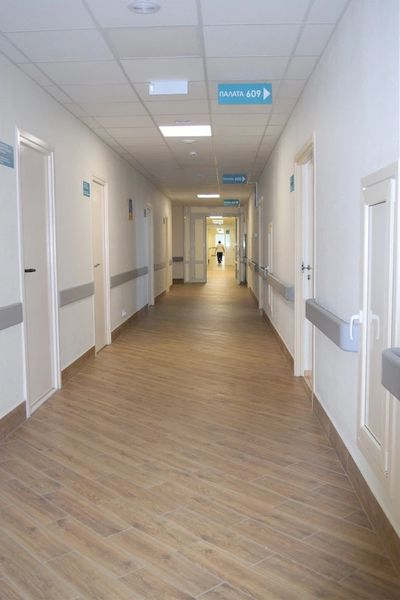
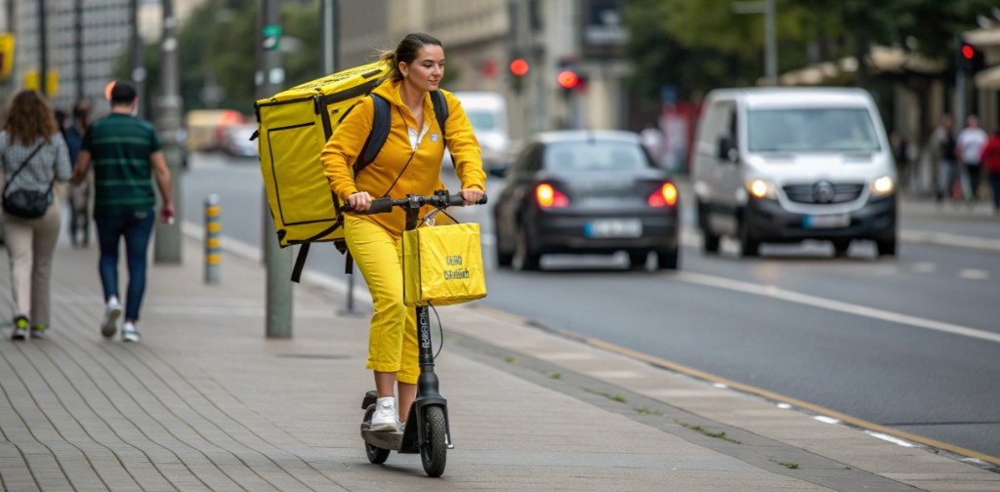
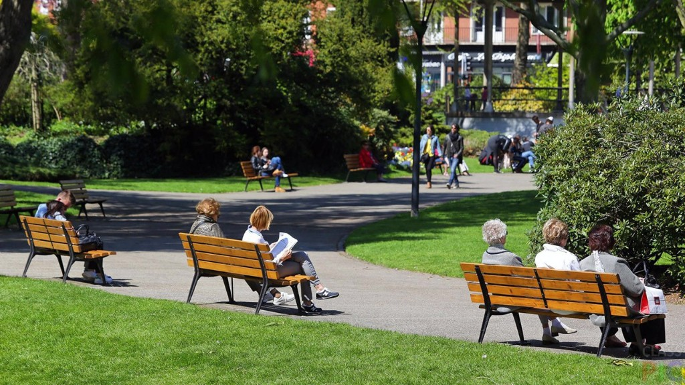
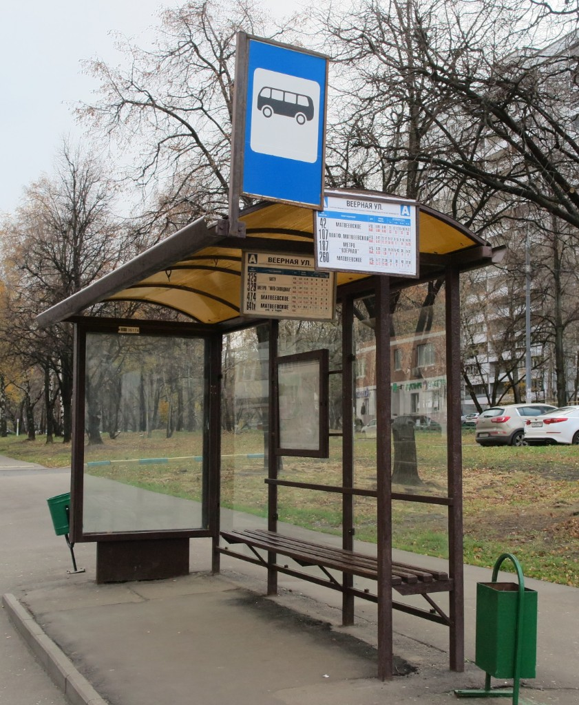
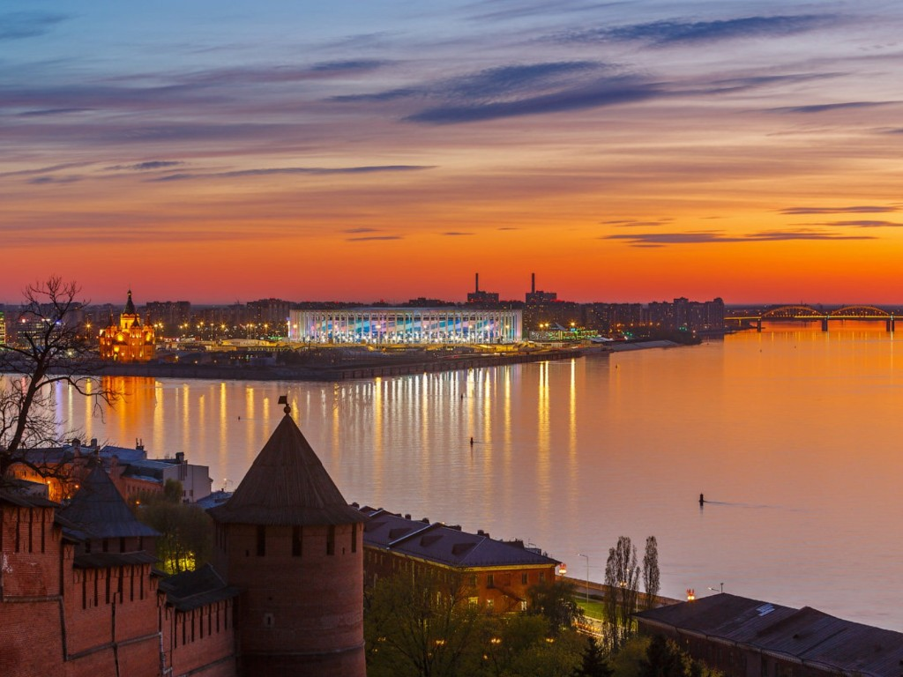

Зачем вам этот текст, если про самокаты уже всё сказано?
Потому что почти все материалы заканчиваются одинаково: «пешеходы злятся, самокатчики спешат, власти не знают, что делать». Это правда — но это не новость. Новость в другом: конфликт на тротуаре не обязателен.
За те же три года, пока российские города спорили о запретах и штрафах, десятки мегаполисов уже прошли этот кризис. Кто-то запретил самокаты на тротуарах. Кто-то построил отдельные дорожки. Кто-то перекроил целые кварталы. Результат везде один: травм стало меньше, кикшеринг остался, война кончилась.
Этот лонгрид — не про «самокаты хорошие или плохие». Он про вопрос, который в России почти не задают: почему мы до сих пор лечим симптомы, а не копируем решения?
Сопоставление российской хроники конфликта (2021–2025) с пятью международными кейсами, где проблему уже решили — и с людьми, которые это сделали.
Россия: хроника застоя
Пока мир двигался к решению, у нас — к эскалации. Нажми год.
Золотой век
Самокаты на улицах. 40 минут в автобусе → 12 на самокате. Восторг. В Париже в это же время уже запретили парковку на тротуарах.
😍 ВосторгПервые жертвы
Резонансные ДТП. Обсуждения шлемов и запретов. Власти: «регулируйте сами». Осло к этому моменту уже выделило 60% уличного пространства под пешеходов и велосипедистов.
😰 ТревогаЭскалация
Парк самокатов растёт втрое. Парковка «где попало». Паблики ненависти. Копенгаген интегрировал кикшеринг в сеть из 400+ км велодорожек.
🤬 ЯростьВойна правил
Геозоны, штрафы, медленные зоны. Депутаты предлагают права и номера. Не помогает. Сингапур ввёл жёсткие парковочные зоны — и штрафы в 10 раз выше наших.
⚖️ ПолитикаХолодная гражданская
«Охотники на самокатов». Самокаты в реку. Миллион просмотров. Барселона завершила первые суперкварталы — самокаты едут по дороге, люди — по своей зоне.
🧊 ЗастойТри голоса тротуара
Конфликт у нас реален. Но он описан сотни раз — поэтому здесь только то, что объясняет, почему простые запреты не работают.

Травматолог: «Каждый апрель мы готовим гипс»
— Самокат превращает обычного идиота в опасного. У пешехода — 5 км/ч, у самоката — 25–30. Тормоза как у велосипеда, колёса как у роликов.
Я не против самокатов. Я против того, что их пустили туда, где нет правил.
Его слова совпадают с данными ВОЗ: 80% травм при езде на самокате — из-за смешения потоков на одном пространстве, а не из-за скорости как таковой.

Курьер: «Система заставляет гнать»
— 7 заказов в час, штраф за опоздание. Алгоритм не знает жалости. Мы с пешеходами воюем за 5 см асфальта — потому что другого места нет.
Дайте дорожку — и я перестану быть зверем.
В Амстердаме курьеры на самокатах ездят по красным велополосам. В Москве — по тротуару между бабушками. Разница не в людях, а в инфраструктуре.
Пенсионерка: «Меня сбили — и уехали»
— Я их называю шуршалками. Идут сзади — не слышно. Сбили, уехал. Раньше кто пешком — тот прав. Теперь кто громче сигналит.
Сделайте для них свои дороги. Моя жизнь не дешевле их доставки.
Именно так сформулировала проблему мэр Парижа Ан Идальго в 2021 году — и через год тротуары в центре города очистили от парковки самокатов.
Мир уже решил это. Пять городов — пять ответов
Нажми на город — увидишь, что сделали и что получилось.
Париж: тротуар — только для пешеходов
2021–2024Мэр Ан Идальго запретила парковку кикшеринга на тротуарах и ввела 180 000 новых парковочных мест для велосипедов и самокатов — на проезжей части, в отведённых зонах. Самокаты не запрещали. Их просто «вытеснили» с тротуара физически — дали им место.
Урок для России: не нужно выбирать между пешеходами и самокатами. Нужно выбрать, кому принадлежит тротуар — и дать самокатам альтернативу.
Герои, которые перестали спорить
Люди, которые не ждали запрета — а перестроили правила игры.
Ан Идальго
Мэр Парижа
Не стала запрещать кикшеринг. Запретила самокаты на тротуарах и одновременно построила 60 км новых велодорожек за один мандат. Конфликт снизился — сервис остался.
«Тротуар — для ног, дорога — для колёс»Ян Гель
Городской архитектор, Копенгаген
Ещё до эпохи самокатов спроектировал город «для людей, а не для машин». Когда пришёл кикшеринг — инфраструктура уже была. Самокаты просто встали в существующую систему.
«Сначала пространство — потом транспорт»Раймунд Аас
Руководитель Oslo Bysykkel
Запустил городскую систему аренды велосипедов и самокатов с фиксированными станциями. Парковка — только в станции, иначе штраф. Через 3 года — 0 жалоб на «брошенные самокаты».
«Свобода без правил — это хаос»Жанет Санчес-Велес
Главный урбанист Барселоны
Автор проекта «суперкварталов»: машины — по периметру, внутри — только пешеходы и медленная микромобильность. Самокаты получили 20 км/ч внутри квартала — пешеходы получили тишину.
«Медленный город — безопасный город»
Где у нас ломается: пять точек, которых нет в Осло
В успешных городах эти места давно перестроены. У нас — нет. Нажми на метку.

Узкий тротуар у остановки
Пешеходы выходят из автобуса — самокат в 10 см. В Копенгагене здесь была бы велополоса между остановкой и дорогой.
🔴 У нас · 🟢 В Копенгагене решеноВывод: это не война. Это отставание
Три года российские города спорят: запретить или разрешить. Париж, Осло, Копенгаген, Барселона и Сингапур этот вопрос уже закрыли. Не потому что у них другие люди — а потому что они перестали спрашивать «кто виноват» и начали спрашивать «кому какое пространство принадлежит».
Формула простая и проверенная:
- Тротуар — только пешеходы. Без исключений.
- Самокаты — на выделенные полосы или проезжую часть с ограничением скорости.
- Парковка — только в зонах. Штраф автоматический, не договорной.
- Город строит дорожки — операторы не «обещают безопасность», а работают в готовой системе.
Конфликт на тротуаре — не судьба. Это политический выбор откладывать перестройку. Пока мы спорим, мир уже едет по своей полосе.
Россия отстаёт не на три года — на один урбанистический цикл. Вопрос не «самокаты да или нет». Вопрос: сколько ещё сезонов гипса нужно, чтобы мы скопировали то, что уже работает?
